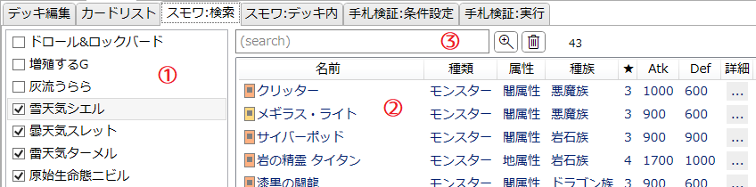
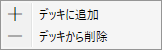

「スモワ:検索」タブ
デッキ内のカードとスモワ条件を満たすカードを検索するためのタブです。
説明

-
対象リスト
- 「デッキ編集」タブで設定された、メインデッキに含まれるモンスターカードが一覧されます。
-
項目をクリックすることでチェックを入れたり外したりできます。
- 左ボタンを押したらそのままドラッグすることで、マウスが通過したボタンを一括で設定できます。
- 最初のクリックでチェックを入れた場合はドラッグで一括チェック
- 最初のクリックでチェックを外した場合はドラッグで一括解除
-
項目の上で右クリックするとメニューが開き、「デッキから削除」をクリックするとそのカードをデッキから3枚減らします(全て取り除きます)。

-
候補リスト
-
対象リストでチェックを入れたカード全てに対してスモワ条件を満たすカードが表示されます。
- カードを1つだけ選択した場合は、単にそのカードとスモワ条件を満たすカードが表示されることになります。
- カードを複数選択した場合は、この一覧に表示されるカードはスモワの中継となることが分かります。
- Shiftキーを押しながら項目をクリックすると、山括弧《》で囲ったカード名がクリップボードにコピーされます。
-
項目の上で右クリックするとメニューが開き、「デッキに追加」をクリックするとそのカードをデッキに1枚追加します。
-
ヘッダー(「名前」などが書かれている部分)をクリックすると、それを基準として項目をソート(並べ替え)します。
- ソートを解除(ID順にソート)したい場合は「詳細」のヘッダーをクリックしてください。
-
対象リストでチェックを入れたカード全てに対してスモワ条件を満たすカードが表示されます。
-
サーチバー
-
テキストボックスに入力してEnterを押すとテキスト検索を適用します。
詳しくは検索ウィンドウ/文字列検索を参照してください。 - : 検索ウィンドウを開きます。
- : 絞り込みを解除します。
- サーチバーの右端には、現在そのリストに表示されている項目の数が表示されます。
-
テキストボックスに入力してEnterを押すとテキスト検索を適用します。